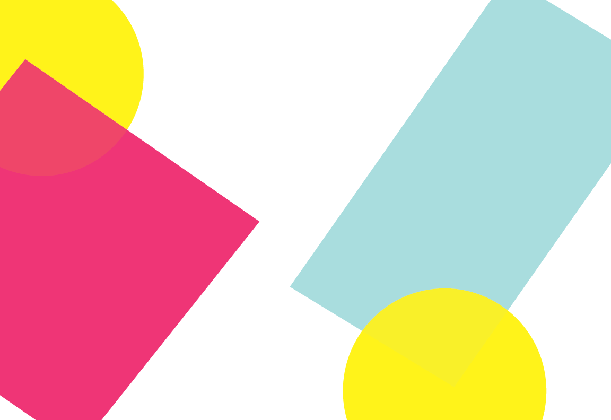

Collabarative
Collection
This collection was created
with a combination of
different illustrater files. There were restrictions
placed on what the maker
places on the files. The only
elements used were circles ,
trianges, and squares.
With these elements we as the
viewers can see that something
simple can become dynamic and
engaging with just colors
and simple shapes.
HOMEPAGE